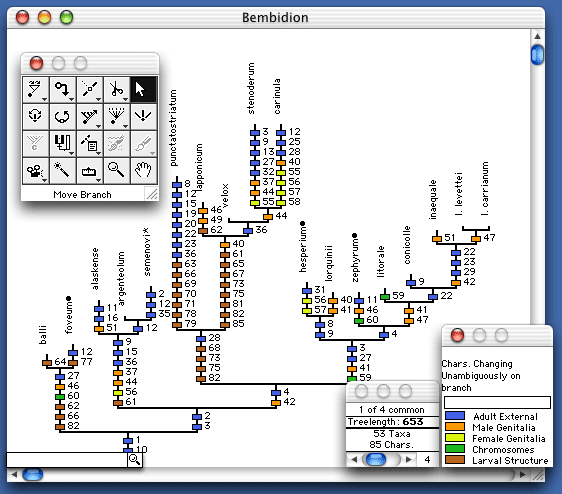
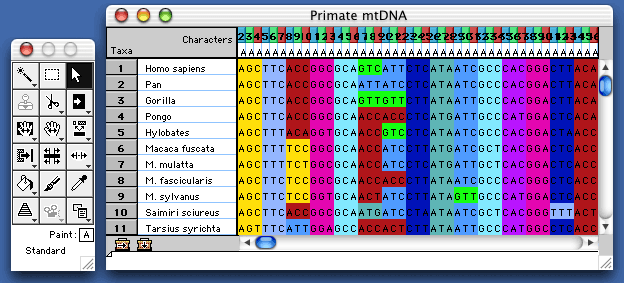

MacClade
is a computer program for phylogenetic analysis written by David
Maddison and Wayne Maddison. Its analytical strength is in studies
of character evolution. It also provides many tools for entering
and editing data and phylogenies, and for producing tree diagrams
and charts.
MacClade will not work under MacOS 10.7 (Lion) or any later MacOS
Apple dropped support for older programs like MacClade in MacOS 10.7 (codenamed "Lion").
Thus, MacClade will not work on machines with that operating system or any more recent ones installed. If you are using any modern operating system, we suggest you explore Mesquite instead.
MacClade is now available as a free download
As of 1 May 2011, MacClade is no longer being distributed by Sinauer Associates, and is now freely available from this site's download page.
Thanks to Sinauer Associates
For 19 years, Sinauer Associates have been the publishers of MacClade, beginning with version 3.0, and ending on 30 April 2011, with version 4.08. During this time they have been the epitome of a superb publisher: professional, thoughtful, considerate, generous, flexible, and focused on quality. In today’s world, with the ease of inexpensive Internet distribution, they have been the perfect example of the continuing value of a for-profit publisher, and what a dedicated group of capable individuals can do. We are deeply thankful to Andy Sinauer, Dean Scudder, and all who work at Sinauer Associates, for everything that they have done for us.
MacClade and the new Intel Macs
MacClade apparently runs fine on the new Intel Macs, and under the
newer operating systems up to MacOS 10.6; we have not encountered problems, nor
have we heard of any problems. If any of you encounter problems,
please contact us. (MacClade has not yet been rebuilt to run
natively on the new Intel Macs, but that should not matter.)
MacClade 4.08 is available
MacClade 4.08 is available, including a version for
MacOS X. It has a number of new tools, including
some for sequence alignment. Check out the MacClade
Updater
page for more information.

MacClade 4's tree window in MacOS X

MacClade 4's data editor in MacOS X
Features
Downloads
Support
If you have MacClade 3, but not MacClade 4, and wish to see bug
reports, updates to version 3.08, etc., see: